If you dream of riding on the water but do not know where to start, let's figure it out together. Kitesurfing, windsurfing and wingfoil are three exciting options. Here is a simple comparison without complicated terminology.
Windsurfing: the relaxed classic
Windsurfing uses a board with a sail. You stand up, catch the wind and glide across the water. The stronger the wind — and the more you unload the board by leaning out — the faster you travel.
Advantages
- Ride in almost any wind. A wide board and large sail help in a light breeze.
- Easier to learn. Balance comes sooner than it does with a kite.
- A full-body workout. Your arms, core and back are all involved.
Keep in mind
- Bulky equipment. A board and sail need a car with enough luggage space.
- Slower progression. Tricks and jumps require a lot of training.
Best for: people who enjoy feeling the wind without rushing, riding waves or cruising across open water under sail.
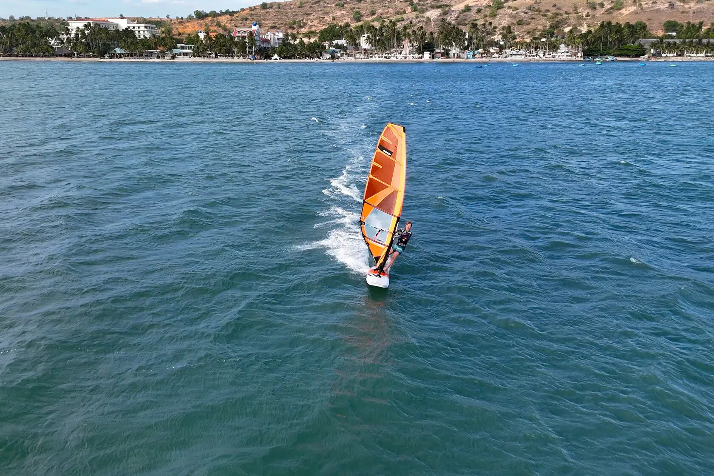
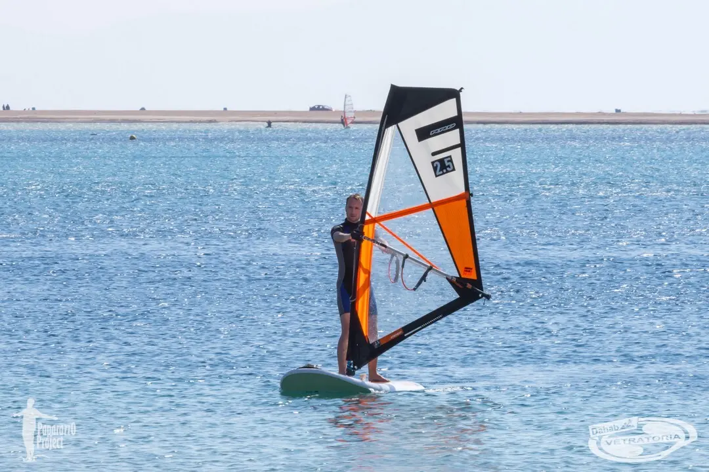
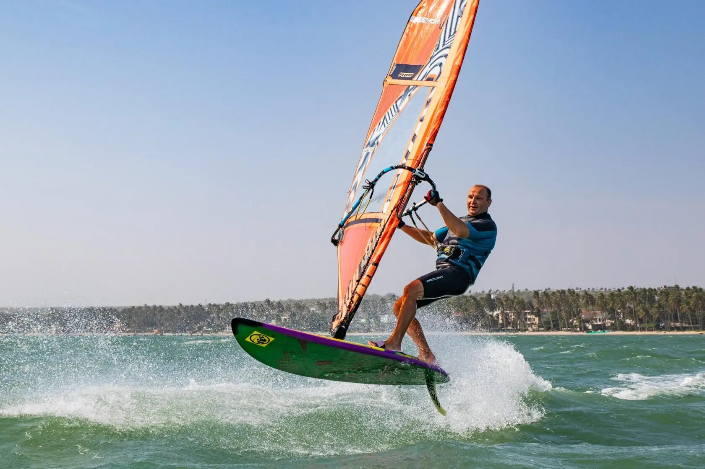
Wingfoil: flying over the water
Wingfoil combines an inflatable wing held in your hands with a board mounted on a hydrofoil. The wind lifts the board onto the foil and out of the water, letting you fly almost silently and without spray.
Advantages
- Light wind. Around 4–5 m/s can be enough to ride.
- Compact equipment. The wing fits in a backpack and the board in most cars.
- A quick start. The basics can be learned in 5–7 hours.
Keep in mind
- Challenging balance. The first attempts feel like learning to ride a bicycle. A boat and tow rope lesson with an instructor helps you understand the foil.
- Delicate equipment. The foil can be damaged by rocks and shallow water, so you need more than one metre of depth.
Best for: people who want to start quickly, love technology and dream of silent flight over the water.
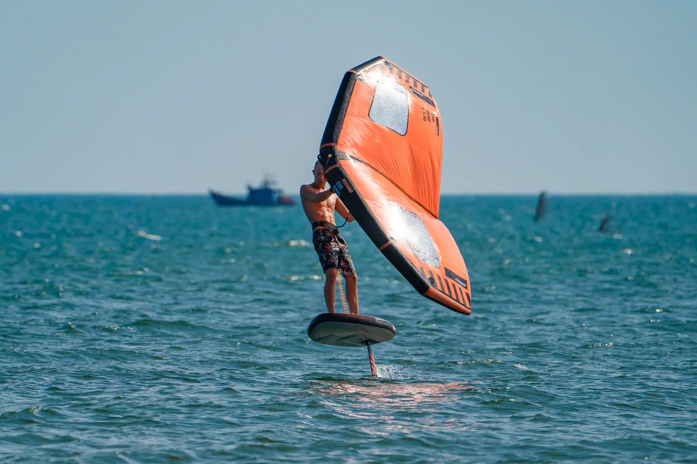
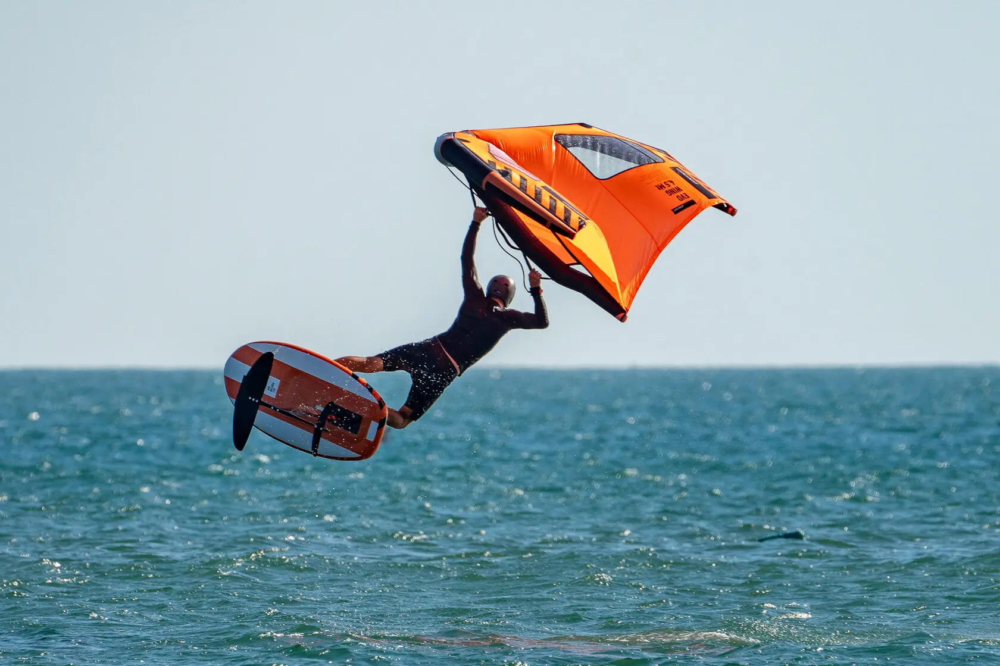
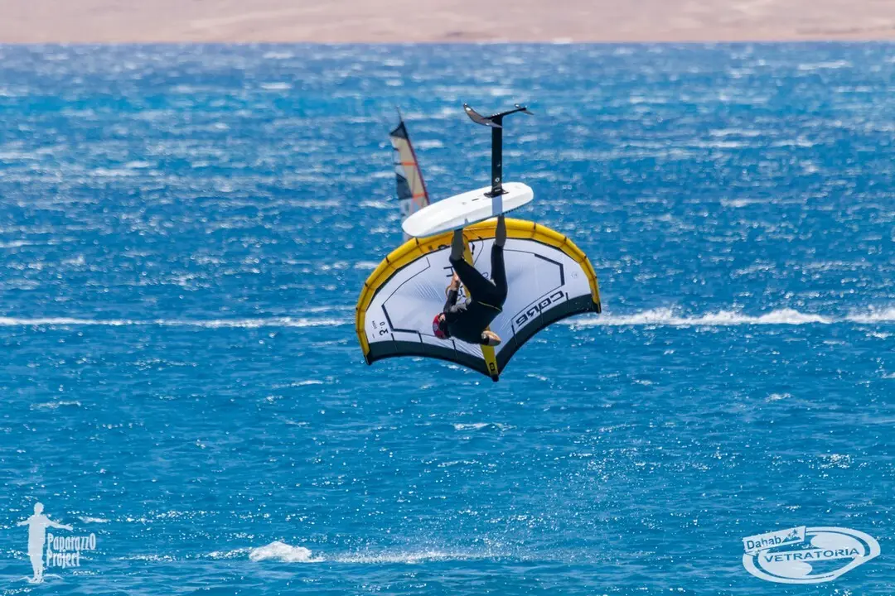
Kitesurfing: height and freedom
Kitesurfing means controlling a large kite that pulls you across the water on a board. You can build speed, jump, perform tricks and even ride on snow in winter.
Advantages
- Mobility. A kite bag and board fit easily into a car.
- Adrenaline. High jumps, speed and tricks keep it exciting.
- Versatility. Suitable for the sea, lakes and even snow.
Keep in mind
- You need wind. Below 6 m/s, riding becomes difficult.
- A complicated start. An instructor is essential because the lines and safety systems take time to understand.
- Learning time. Confident riding usually requires 10–15 hours.
- Launch space. You need a large clear area and usually another person to assist.
Best for: people ready to learn who love extreme sports, height, speed and spectacular jumps.
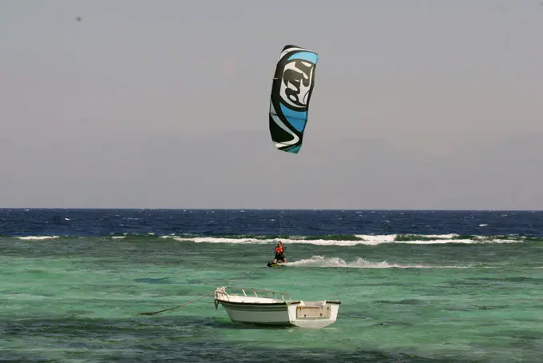
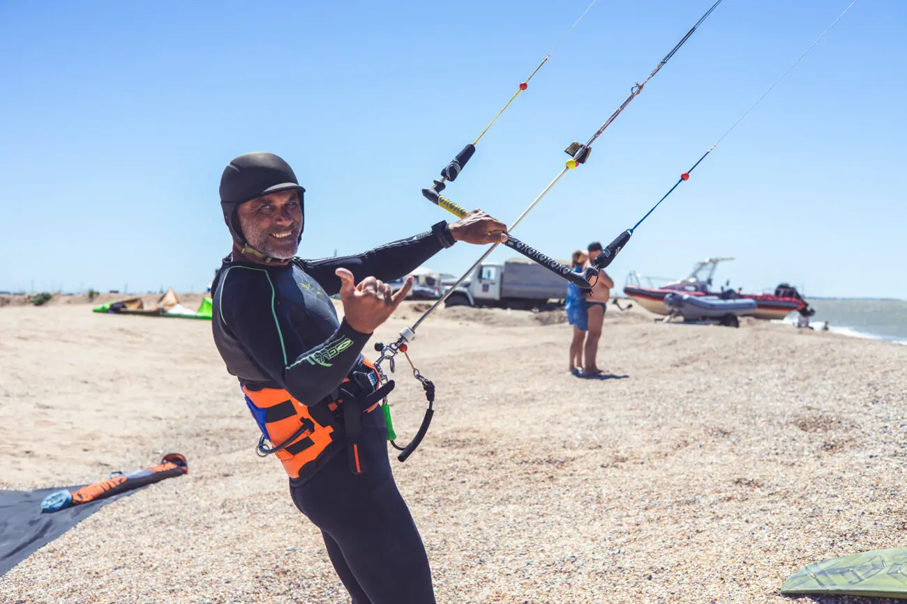
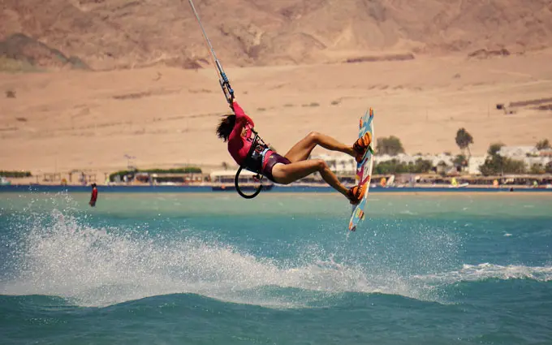
Where is the best place to learn?
A calm bay
All three sports work on waves, but beginners should start on calm water without strong currents. Dahab has a learning Lagoon and Speed Zone. Explore our water area.
A pond or lake
Choose wingfoil: even a smaller body of water with light wind may be enough to get onto the foil.
A compact setup
Wingfoil is the convenience champion. Kite gear is compact too, although launching it still requires a large clear area.
Five tips from experienced riders
Do not save money on an instructor. This is especially important in kitesurfing, where safety has many nuances.
Rent before buying. Find out whether you prefer waves, racing or tricks.
Light wind is not a problem. Wingfoil works when other sports remain on shore.
Choose calm water for your first sessions. Waves can wait until your balance is ready.
Do not be afraid to fall. Everyone goes through it, including professionals.
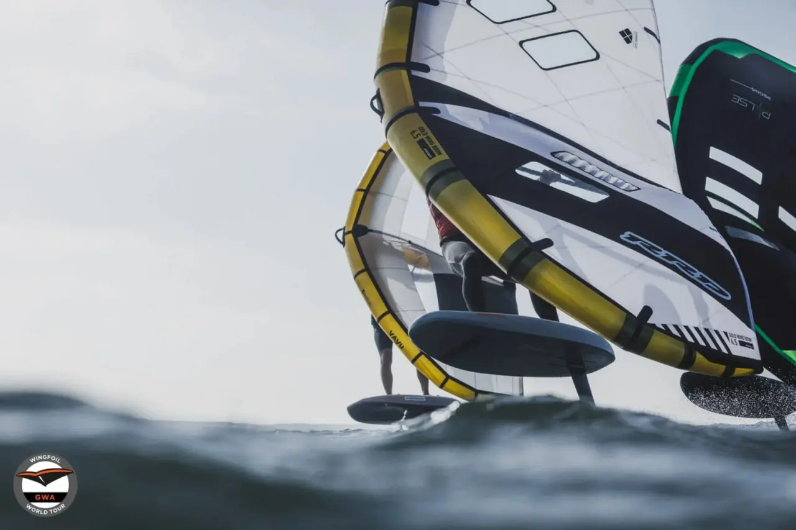
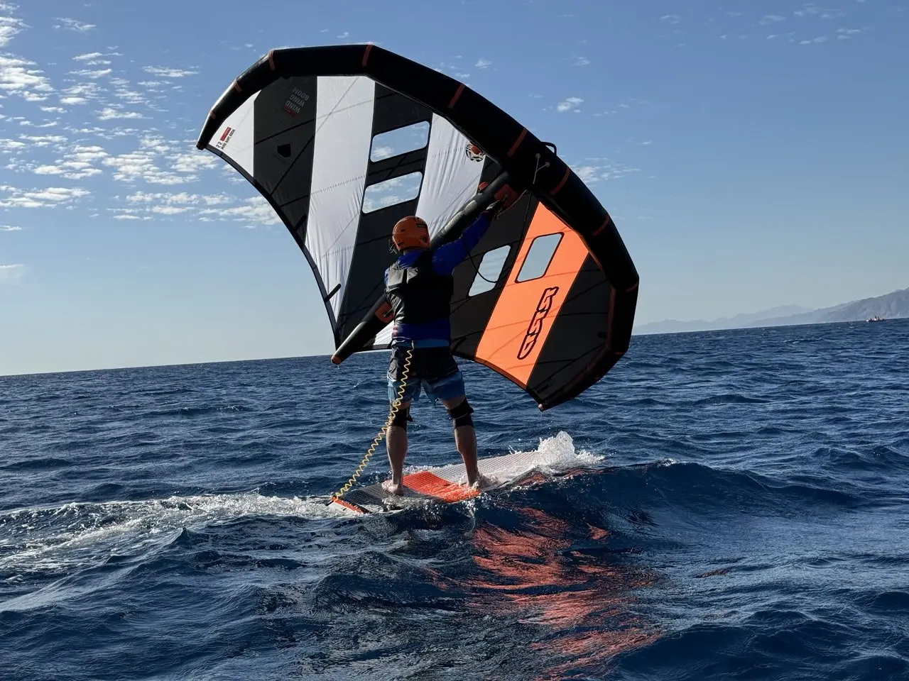